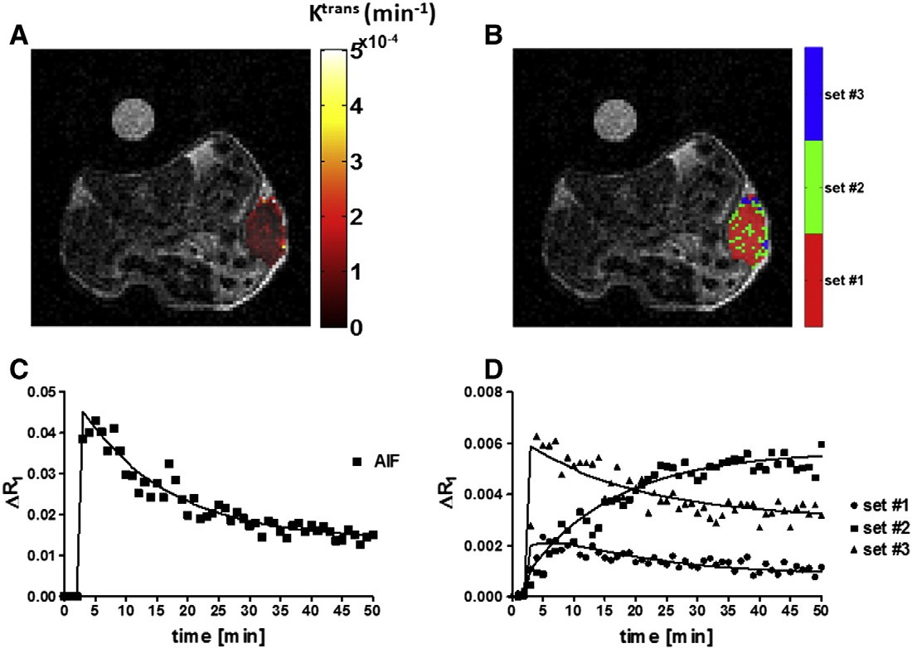
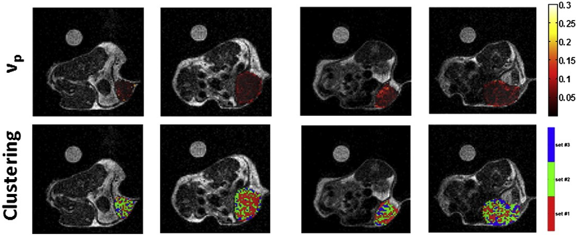

Dynamic contrast-enhanced magnetic resonance imaging
(DCE-MRI) is the methodology of choice for the evaluation of tumor angiogenesis.
DCE-MRI allows investigating microvascular structure and function
by tracking the pharmacokinetics of an injected Gd-based contrast
agent (CA) as it passes through the tumor vasculature. The obtained
enhancement patterns reflect vascular perfusion and permeability of
the tumor. In the quantitative analysis approach, pharmacokinetic models are
applied to contrast agent concentration data to enable estimates of
physiological parameters, including plasma volume (vp), forward
vascular transfer constant (Ktrans) and the reverse vascular transfer
constant (kep). There is an overall agreement in
considering tumor heterogeneity as one of the key factors of the
disease. Conversely,the values of the DCE-MRI estimates are therefore strongly
dependent on how the tumor ROIs are drawn and on the applied statistic analysis.
We addressed this limitation by proposing a clustering approach for assessing tumor heterogeneity and thereof
changes in the evaluation of the response to a DNA-based antiangiogenic treatment employing a blood-pool contrast agent
at 1 T
[Longo et al. 2016].
Within the clustering approach, based on a pixel-by-pixel
analysis, the whole tumor has been segmented into several
sub-regions according to their enhancement/permeability properties.
[Longo et al. 2015],

A clustering analysis was performed on a voxel-by-voxel basis
to evaluate spatial distribution of tumor Ktrans and vp parametric maps.
This study indicates that improvement in the visualization and
quantification of heterogeneity in the angiogenic response of tumor
to therapy can be assessed by a clustering approach, even though
not-homogeneous permeability changes occurred in different areas of
a tumor.
We shown that DCE-MRI can also provide assessment of therapeutic response to vaccine targeting tumor vasculature.
In fact, a DNA vaccine targeting Angiomotin (Amot, an angiostatin receptors expressed by the endothelia of angiogenic tissues)
resulted in tumor growth inhibition that was associated with an increase of vessels diameter and of vessel permeability,
as determined by a DCE-MRI approach
[Arigoni et al. 2012].